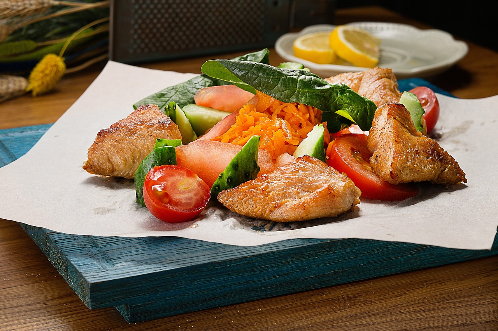

Creamy Garlic Butter Tuscan Chicken
(go back to homepage)

Description
Rich, indulgent, and full of bold flavor, this creamy Tuscan chicken features tender seared breasts smothered in a luscious garlic-Parmesan sauce with sweet cherry tomatoes and wilted spinach. It's a comforting main course that feels both elegant and hearty, perfect for impressing guests or enjoying a cozy dinner at home.
Ingredients
- 4 bonelsess, skinless chicken breasts
- Salt and pepper, to taste
- 1 tbsp of olive oil
- 3 minced cloves of garlic
- 1 cup of cherry tomatoes, halved
- 2 cups of baby spinach
- 1/2 a cup of heavy cream
- 1/4 a cup of grated parmesan cheese
- 1 tsp of ITalian seasoning
Instructions
- Season chicken on both sides with salt and pepper.
- Heat olive oil in a large skillet over medium heat. Cook chicken for 5-6 minutes per side until golden and cooked through. Remove and set aside.
- In the same pan, sauté garlic for 30 seconds. Add tomatoes and cook for 2-3 minutes until softened.
- Add spinach and cook until wilted.
- Stir in heavy cream, Parmesan, and Italian seasoning. Let simmer until sauce thickens (2-3 minutes).
- Return chicken to the pan and spoon sauce over it. Simmer for another 2 minutes. Serve hot.